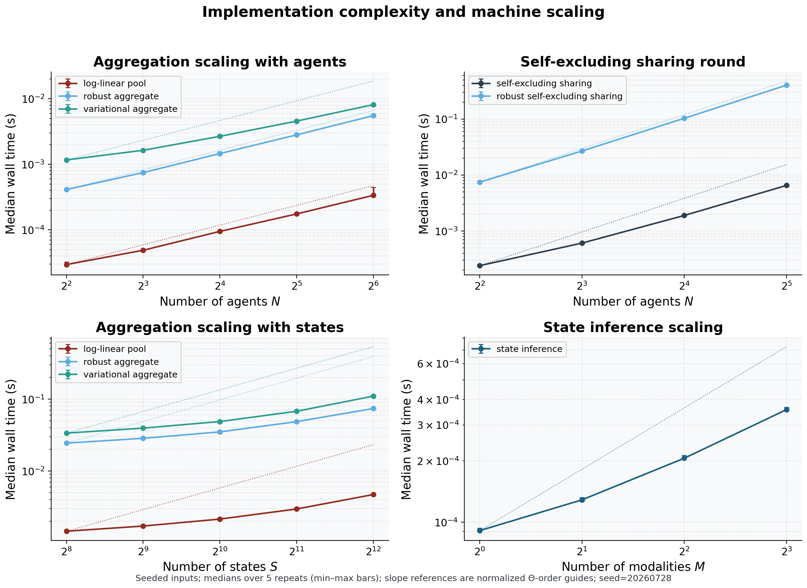

Statistical protocol: matched comparisons, intervals, and bounded claims
No “robust beats naive” claim is written before a statistical test
produces it (Algorithm Gate I). Where the active-inference community has
typically reported belief-fusion outcomes as single illustrative runs,
we treat every headline contrast as a paired hypothesis test with
effect-size estimation, multiple-testing deflation, confidence
intervals, and an observed-effect design-power calculation — the
reporting discipline expected by robust statistics and applied inference
(Huber and Ronchetti 2009; Efron and Tibshirani 1993; Koehler et al. 2009; Morris et al. 2019; Loy and Korobova 2021; Nakagawa and Cuthill 2007; Benjamini and Hochberg 1995; Wasserstein and Lazar 2016). The protocol lives in
statistics.py, sits at the analysis tier above the locked
FedGVI core, and emits every number the results sections report; nothing
is hard-coded (ISC-30).
Paired comparison and standardized effect size
The headline claim is paired: across matched scenarios —
same seed, same contamination — does the robust aggregator raise
consensus accuracy over the naive log-linear pool? For the expanded
review grid, the inferential unit is the seed: trials are nested within
a seed/cell and are averaged before seed-level contrasts. The primary
robustness sweep also retains a trial-level paired diagnostic, but its
matched trial replicates are nested within one fixed seeded world and
are not independent worlds. The seed-level review-grid estimand is
therefore the robust-minus-naive accuracy difference after the declared
trial reduction, not a contrast of two independently drawn group means.
Each configured robust method is retained in every review-grid rate
panel and has its own seed-level contrast, interval, and test; no
pooled-selected curve or pooled-selected inferential member enters that
grid. The naive comparator is the project’s log-linear pool Eq. (5). Under the
shared-support, posterior-log-potential, and fixed-weight assumptions of
Section 5.8, it
specializes the message-combination term of Friston et al.’s Eq. 7
(Friston et al. 2024), rather than reconstructing the complete source
protocol. We test it with the matched-pairs Wilcoxon signed-rank test
(Wilcoxon 1945) (statistics.paired_test, ISC-28),
interpreted under the usual signed-rank conditions: seed-level paired
differences are independent across the declared seed schedule, while the
primary sweep’s trial-level diagnostic remains conditional on its fixed
world; the differences are ranked after zero differences are removed,
and the null is a symmetric distribution of paired differences around
zero rather than an equality-of-means claim (Fay and Proschan 2010). This is
the right comparison for bounded, often non-Gaussian accuracy deltas,
but it is not assumption-free. The test reports the primary
matched-pairs rank-biserial effect \(r_{\rm
rb} = (T^{+} - T^{-})/(T^{+} + T^{-})\). We retain the monotone
secondary transform \(d_{\rm eq}=2r_{\rm
rb}/\sqrt{1-r_{\rm rb}^2}\), labeled a rank-biserial-derived
d-equivalent, never raw Cohen’s \(d\) and never a replacement for the mean
contrast. When \(r_{\rm rb}\) saturates
at \(\pm1\), the transform diverges;
tables print a signed saturation marker rather than a finite
million-scale value. The primary-sweep headline display method RKL has
rank-biserial effect 1.0000, d-equivalent saturated (r=+1) (large), with
the paired mean difference and bootstrap interval reported alongside
it.
Bootstrap interval estimates
Every inferential mean — colony free energy, learning-curve KL,
per-method accuracy, and the robust-minus-naive accuracy difference —
carries a 95% percentile-bootstrap confidence interval
(Efron and Tibshirani 1993) from statistics.bootstrap_ci,
resampled from the declared unit. For the review grid, the unit is the
seed after the nested trials have been reduced; for the primary
fixed-world sweep, the interval is explicitly trial-level and
conditional; for single-seed diagnostics, it is descriptive or
trial-level. The single-colony mechanistic rate table is \(n=1\) per cell and is descriptive, not an
inferential mean; its companion profile uses the declared nested design.
This separation follows simulation-reporting guidance to declare the
estimand and the independent Monte Carlo unit (Morris et al. 2019).
The interval quantifies variation over the declared resampling unit
(seed, recorded step, or matched trial) and is conditional on this
simulation design, not on unmodeled real-world deployment uncertainty or
alternative contamination models. The headline mean robust-minus-naive
accuracy difference is 0.0846 with 95% CI \([0.0821, 0.0873]\), and the accuracy at the
verdict rate is 0.9021 for the naive pool (95% CI \([0.8993, 0.9049]\)) against 0.9867 for the
most accurate robust member (95% CI \([0.9865,
0.9869]\)).
For every multi-seed summary we also report the Monte Carlo standard error (\(\mathrm{MCSE} = s/\sqrt{n_{\rm seed}}\)) and an approximate two-sided minimum detectable effect (MDE) at the configured target power. These are precision diagnostics over independent seeds, not claims about sampling a real population. The MDE uses a normal approximation conditional on the observed seed-level standard deviation (Koehler et al. 2009); it is reported alongside the non-parametric interval rather than used to replace the paired test.
Multiple-testing deflation by BH-FDR
The sweep compares each robust divergence against the naive pool, so
an uncorrected \(p < 0.05\) across
the family would manufacture false discoveries. We control the
false-discovery rate with the Benjamini-Hochberg step-up procedure
(Benjamini and Hochberg 1995) (statistics.bh_fdr, ISC-29) at
\(\alpha = 0.05\). The verdict family
owns one robust-versus-naive contrast per robust method at the
predeclared verdict rate; each rate table owns its own within-method
rate family. Families are not pooled across figures or across the
review-grid cells. The review-grid families retain all configured method
contrasts and do not derive a selected member by pooled mean. The
procedure returns both the rejection mask and the monotone BH q-values.
BH controls expected false discovery proportion within the stated
family, not the family-wise probability of any false positive; the
manuscript therefore states the family each table uses. The
positive-contrast rule is strict and conjunctive: a method is a
BH-rejected positive contrast iff BH rejects its null
and its rank-biserial effect is positive. This is a
statistical decision for the named family, not a unique scientific
winner. The primary-sweep headline display method has raw \(p = 1.11 \times 10^{-158}\), deflating to
BH \(q = 1.11 \times 10^{-158}\).
Prospective power analysis for the verdict rate
We report not only that the verdict rejected the null but
the observed-effect planning power implied by the run and the number of
pairs a confirmatory run could budget. The observed-effect design power
of the headline paired Wilcoxon at the primary sweep’s matched-trial
unit, \(n_{\rm trial} = 960\), \(\alpha = 0.05\), alternative
greater, is 1.0000; the prospective sample size for the
target power 0.80 at the observed effect is \(n_{\rm trial} = 5\). The estimator is the
deterministic noncentral-normal approximation to the matched-pairs \(t\)-test, deflated by the Wilcoxon’s Pitman
asymptotic relative efficiency \(3/\pi\), so the reported power is
approximately calibrated for the signed-rank test the harness runs (the
deflation is exact under a normal-shift alternative); note the power
computation is directional for planning, while the reported p-values are
two-sided. This is an observed-effect planning approximation conditional
on the observed effect size, not independent evidence for the result and
not a confirmatory power guarantee.
Reporting tables and the honesty boundary
The results sections render five statistics tables straight from these tokens: the per-rate accuracy sweep (Table 2), the robust-versus-naive verdict (Table 4), the standardized-effect verdict with observed-effect design power and prospective \(n\) (Table verdict-effects), the per-method accuracy with bootstrap CIs at the verdict rate (Table 6), and the per-contamination-rate paired tests (Table paired-by-rate). Every cell is a generated token, never hand-typed.
The honesty contract binds at exactly this tier. The effect-size, CI,
and power enrichment above decorates the server-side
robust_aggregate divergence-reweighting contrasts only. It
does not certify the per-client \(\beta\)/rcce generalized-Bayes (FedGVI)
guarantees, which are pinned by the locked core (Proposition 4 of Section 6)
rather than by these aggregation-level statistics — the three robustness
axes of Section 3.3 kept
distinct.
Computational complexity and scaling diagnostic
The release now reports computational complexity from the implementation itself. Let \(N\) be the number of agents, \(S\) the number of categorical states, \(I\) the solver-iteration budget, \(B\) the number of variational starts, and \(M\) the number of conditionally independent observation modalities. The dominant dense work and the storage actually retained by the current NumPy paths are:
| operation | dominant time order | retained or peak storage |
|---|---|---|
| log-linear pooling | \(\Theta(N S)\) | \(\Theta(N S)\) |
| iterative robust pooling | \(\Theta(I N S)\) | \(\Theta(N S + I S)\) |
| objective-backed variational pooling | \(\Theta(B I N S)\) | \(\Theta(N S + I S + B S)\) |
| self-excluding naive sharing | \(\Theta(N^2 S)\) | \(\Theta(N S)\) |
| self-excluding robust sharing | \(\Theta(I N^2 S)\) | \(\Theta(N S + I S)\) |
| one-step state inference | \(\Theta(M S)\) | \(\Theta(S)\) |
| server round, excluding queue/network wait | \(\Theta(N log N + I N S)\) | \(\Theta(N S)\) |
These are dominant interaction counts, not hardware-independent FLOP totals. The \(N^2\) sharing term is material: with sensory attenuation enabled, one round computes one global pool and one leave-one-out pool per agent. The iterative server rules additionally retain their returned per-iteration histories, which is why their storage rows include \(I S\). The server row includes worker-ID sorting and dense aggregation; incoming serialized belief volume is linear in \(N S\), while queue and network latency are deliberately outside this local-compute accounting. The local path serializes one consensus-plus-weight result; if physical broadcast bytes are counted per recipient, that outgoing volume additionally has an \(N^2\) term because each result carries the \(N\) agent weights.
The accompanying seeded benchmark measures the real public call paths on the declared grids \(N \in \{4, 8, 16, 32, 64\}\), \(S \in \{256, 512, 1024, 2048, 4096\}\), self-excluding sharing \(N \in \{4, 8, 16, 32\}\), and \(M \in \{1, 2, 4, 8\}\). The fixed dimensions are \(N=256\), \(S=64\) for aggregation, and \(S=16384\) for state inference; direct aggregation and server timings use \(I=6\), while the public robust self-excluding sharing path uses its solver budget \(I=32\); the default variational path uses \(B=3\). Each grid point is warmed up \(1\) time(s) and measured \(5\) time(s), with median time plotted and the observed repeat range shown as a min–max bar. The fixed input seed is \(20260728\) on the \(arm64\) machine using Python \(3.13.11\) and NumPy \(2.4.2\).
The measured log–log slopes are descriptive checks of the expected orders, not performance guarantees: agent-axis slopes are 0.89 (log-linear), 0.94 (iterative robust), 0.71 (variational), 1.59 (naive self-excluding sharing), and 1.92 (robust self-excluding sharing); state-axis slopes are 0.42, 0.40, and 0.42; the modality-axis inference slope is 0.66. The slope fit is a timing diagnostic on this machine, not an inferential test and not evidence that the same constants hold under another BLAS, accelerator, process topology, or distributed network. A finite grid can also yield a sublinear fitted slope when validation, allocation, cache, and interpreter overheads are material; the implementation-derived order is the governing claim, not equality between a finite-grid slope and its exponent.
Figure Figure 6 visualizes the implementation-derived orders and the corresponding finite-grid timing diagnostic.
